A replica of an industrial tape dispenser, scaled up 1.25 times and built by hand to understand prototyping: experimenting with materials, evaluating ergonomics and working out how the parts assemble.
Model construction, Industrial Design semester 3 at NID Andhra Pradesh, guided by Rajiv Jassal.
Replicating an industrial tape dispenser teaches product design and engineering in one object: ergonomics, function, material selection, feasibility and aesthetics.

Before building, I drew the dispenser from observation and then measured every part in dimensional drawings.
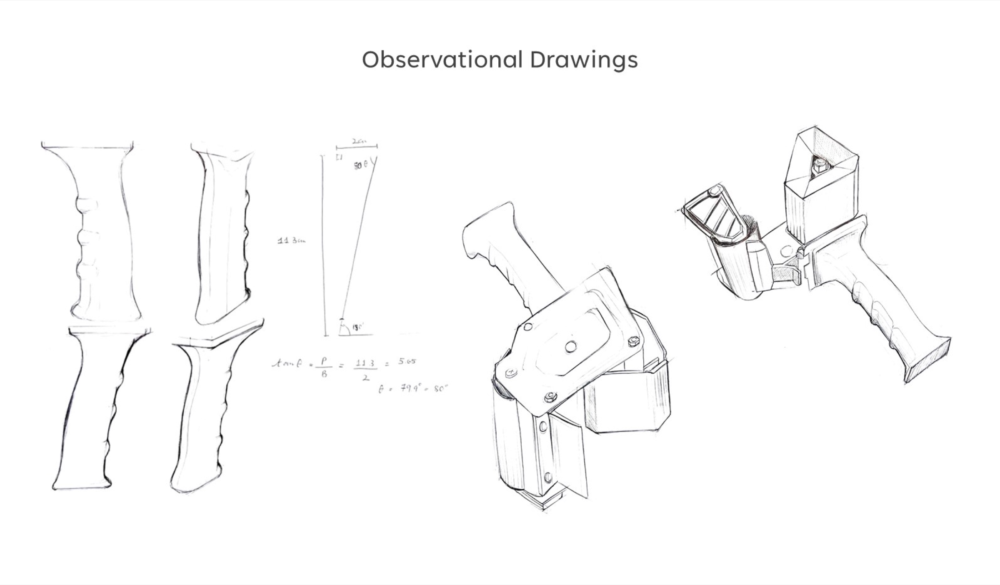
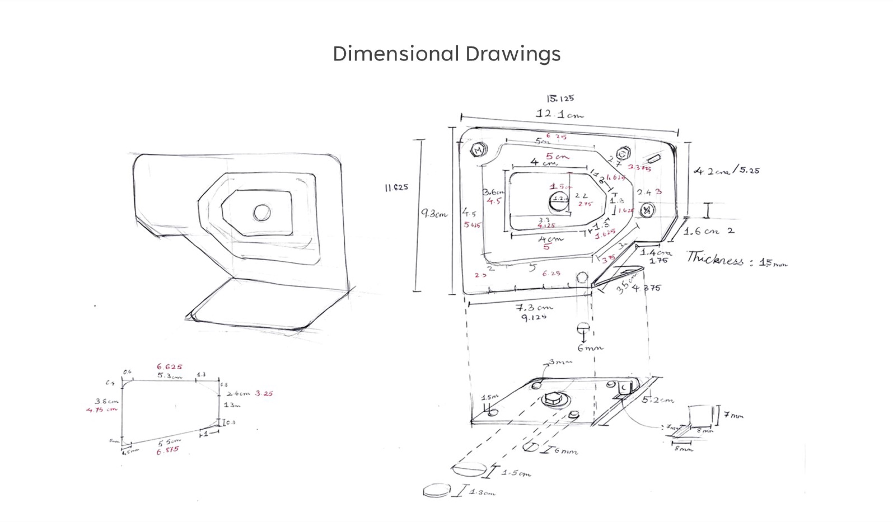
The dispenser has many parts, and I made each one in different materials: cardboard, clay and thermocol. A soft model and a quick "jugaad" model came first.
I kept asking: why does it have this form, why is it inclined at an angle, where else have I seen this texture, and which material and process should make the final part?
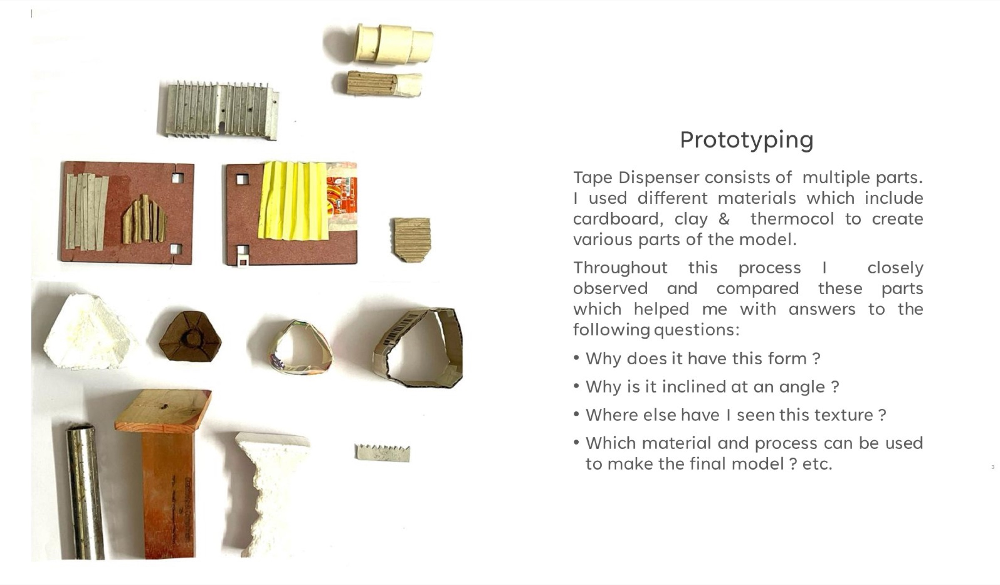
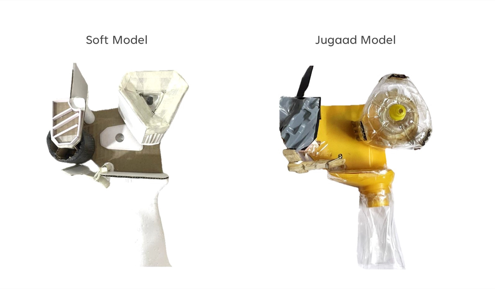

The cylinder is a bamboo piece of the exact diameter, thinned with a Dremel, with an aluminium pipe and MDF inside.
The ridges came after failed laser-cut and M-seal attempts: bamboo spaghetti gave the linear texture with no finishing.
The handle was the toughest part, and the spring part is cut from one block of teak so it is strong enough to work.
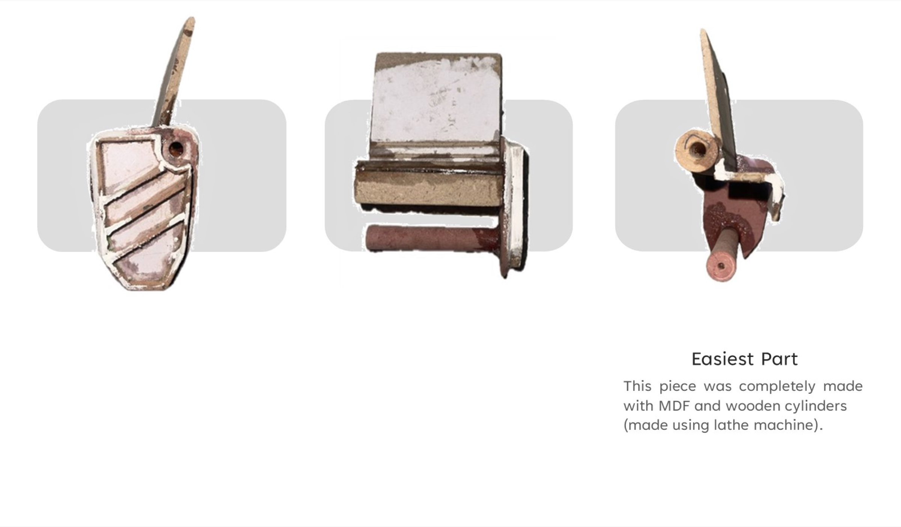
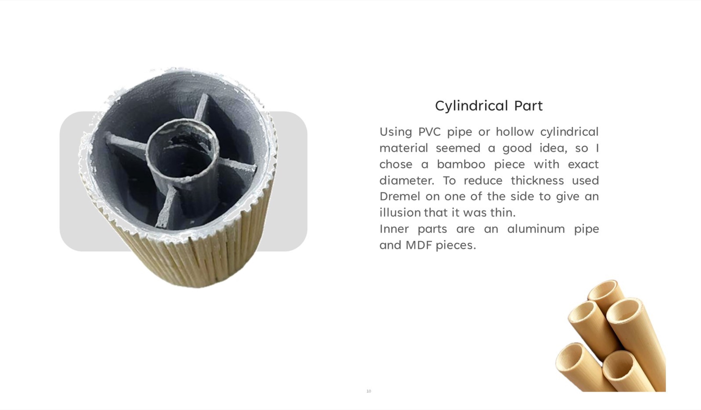
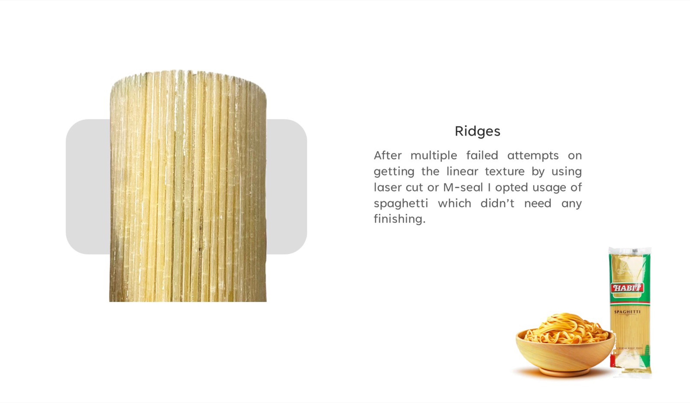
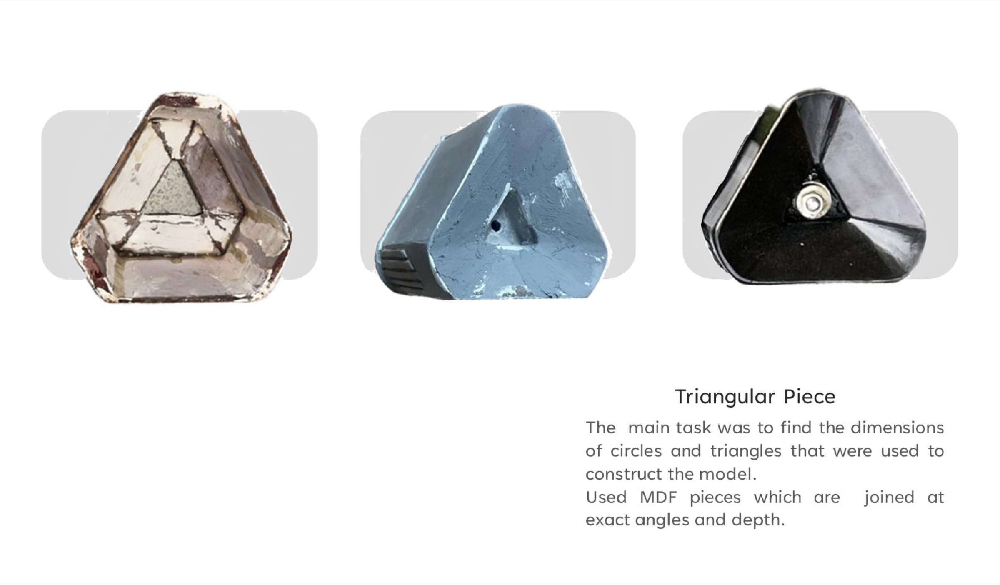
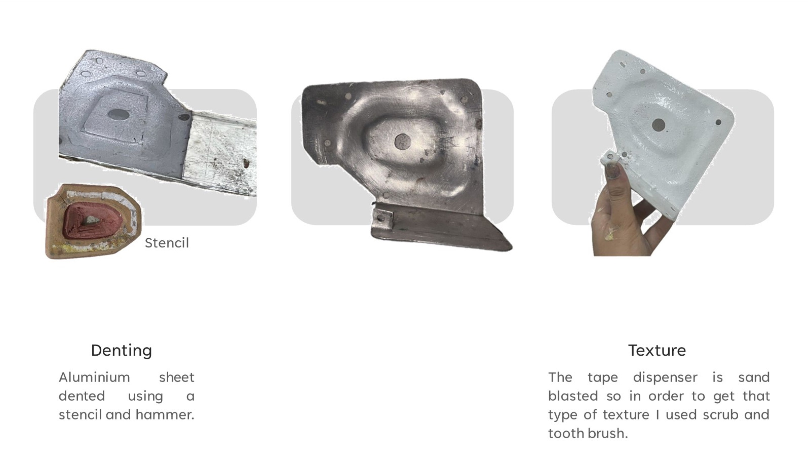
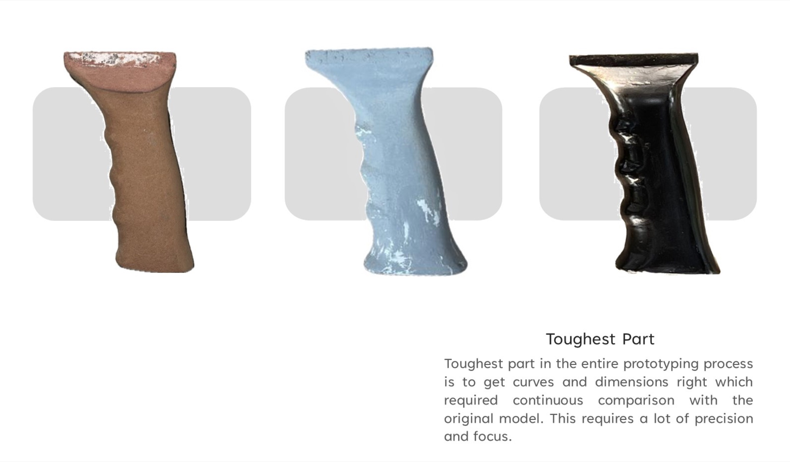
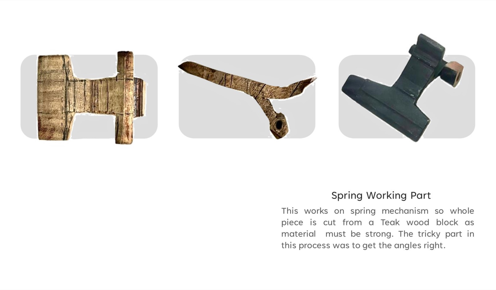
Three to four layers of grey putty, one to two coats of spray paint, then 500-grit sandpaper for a high-quality finish.


On Behance: “Beautiful work!” Shaardul Pandey. “Really nice.” Anand Raj. “Nicely documented.” Prateechee Prusty.